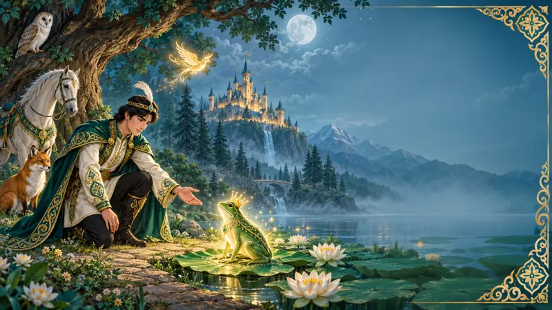
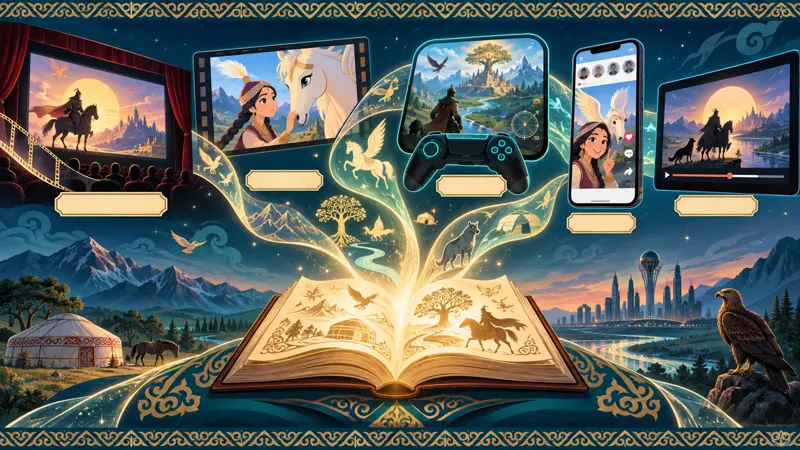
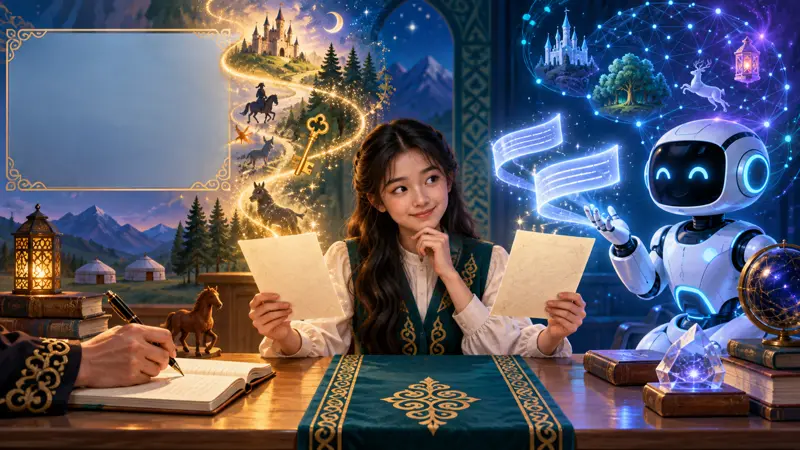

Сказка жива не из-за старинной формы, а благодаря понятным темам.
Определить, какие особенности помогают сказке сохранять популярность среди современных школьников и как жанр меняется в цифровой среде.
Объект — сказка как литературный жанр в традиционной и современной культуре. Предмет — герой, конфликт, испытание, фантастика и нравственный выбор.
Три формы сказки — народная, экранная и созданная ИИ — впервые сопоставлены по одинаковым критериям. Проверено, могут ли школьники отличить ИИ-текст от текста человека.
Наведите камеру —
откроется цифровой
путеводитель.
От народных историй до искусственного интеллекта. Одна сказка — три формы.
Анкетирование, наблюдение, сравнительный анализ, эксперимент, процентный анализ.



Меняется форма —
сохраняется смысл.
ИИ выдают предсказуемый финал, повторы и слишком прямая мораль.